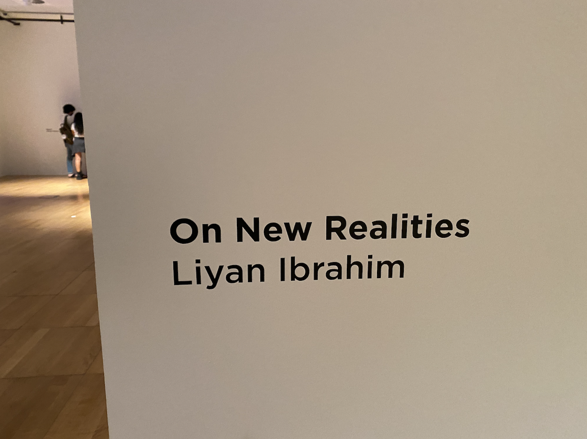
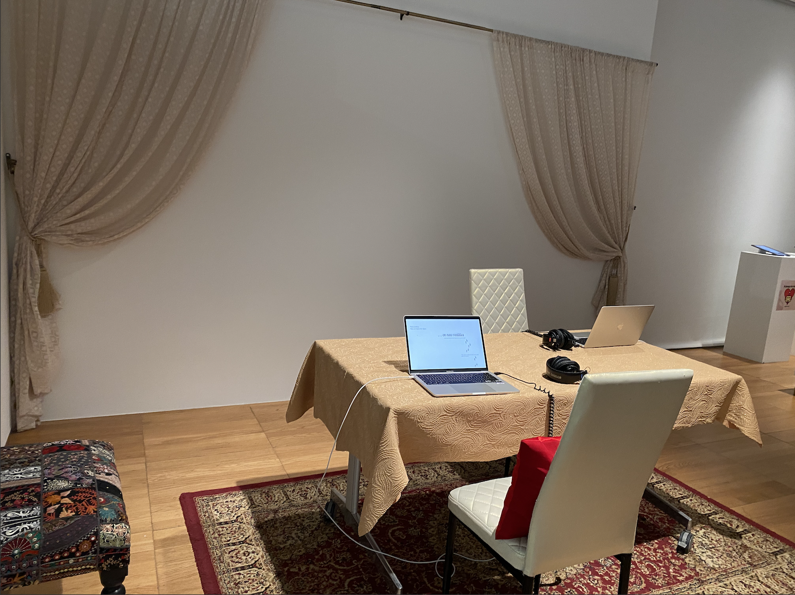
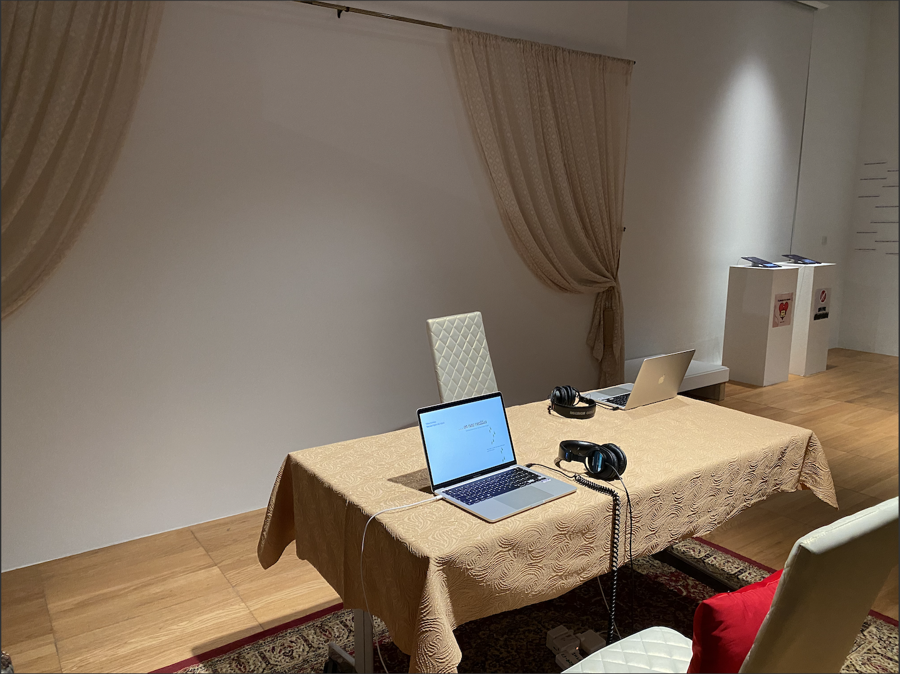
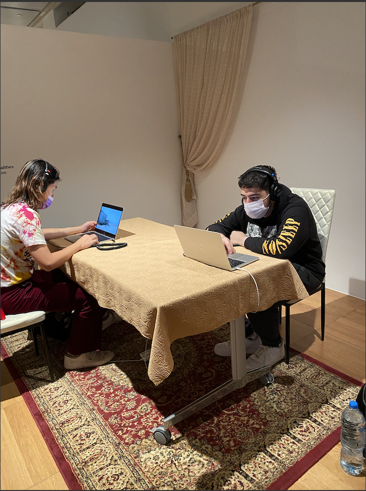

For the physical installation, I wanted to create a space that looks and feels homey and comfortable to experience my project since it is vulnerable. As my project challenges the idea of a homeland and identity, I also wanted the user to be immersed in a "home-like" environment as it grounds the experience even further.
   Reflecting on the physical space post exhibition, I would have wanted to have a more segregated and closed space - maybe even signups to experience my project. Prior to the exhibition, I did not realize how the other projects surrounding mine would influence the users mindset and therefore, given how vulnerable and personal the project is, I would explore separating my project's physical space. I would also consider supplementing the project with theory in order to further enhance the users experience with the content of my project. More about this in my paper!